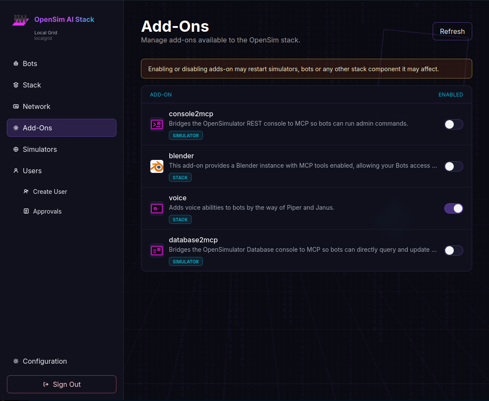

Extend It
Install an Add-on and let your virtual world reach outside the grid.
1 Why Extend?
The stack by default provides the basics to let your Bot move around in the world. But to give them access to a wider world, you are going to want an add-on. The OpenSim AI Stack Add-On Repository is currently small, but growing, giving your bot access to the database, or blender, or the OpenSim console. Most add-ons are based around MCP Servers, and the Model Context Protocol ecosystem is huge, so make a feature request if there is any add-on you'd like to see. Or make one yourself! it's pretty easy if there is already a Docker image on Docker Hub.
Database Access
Query the OpenSimulator MariaDB backend to inspect users, regions, inventory, or land data with natural language.
Email & Messaging
Let the bot send alerts, invites, or status updates via SMTP, Slack, Discord, or Matrix.
Webhooks & APIs
Trigger external services: open doors in a smart home, post to a CMS, or call a game server API.
Calendar & Tasks
Schedule in-world events, create reminders, or sync with CalDAV / todo backends.
File & Asset Storage
Read from S3, MinIO, or a NAS to import OARs, textures, and sounds, or export region backups.
Monitoring & Logs
Connect to Prometheus, Grafana, or Loki so the agent can diagnose grid health on request.
2 Enable An Add-On

3 Ideas to Explore
- ▸ Inventory reports: "List all users with more than 1,000 items."
- ▸ Event invites: "Email everyone about the Friday party and add it to their calendar."
- ▸ Smart regions: "If no one is in the club for 30 minutes, turn off the lights and music."
- ▸ Content pipelines: "Download the latest OAR from S3 and load it into the staging region."
- ▸ Support bot: "Check recent error logs and tell me if any regions crashed."
- ▸ Commerce: "Generate a weekly sales CSV from the economy tables and upload it to Drive."